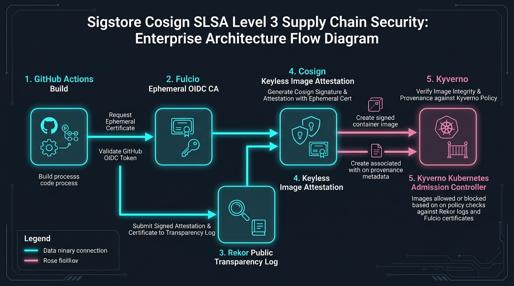

Cryptographic supply chain attestation & keyless OIDC container signing
Automate SLSA Level 3 build provenance, in-toto cryptographic attestations, and keyless container image signing using GitHub Actions OIDC and Rekor transparency log.
Security Telemetry & Compiled Blueprint
Attestation Level
SLSA Level 3
Keyless OIDC Identity
GitHub Actions
Rekor Log Verification
100% Immutable
apiVersion: v1 kind: SigstoreCosignPipeline metadata: name: sigstore-cosign-slsa spec: oidcProvider: "https://token.actions.githubusercontent.com" rekorTransparencyUrl: "https://rekor.sigstore.dev" fulcioCertificateAuthority: "https://fulcio.sigstore.dev" slsaProvenanceLevel: 3 signKeyless: true attestationPredicate: "https://slsa.dev/provenance/v1"
Sigstore Cosign SLSA Provenance Studio Enterprise Topology

Overview & Architectural Superiority
Automate SLSA Level 3 build provenance, in-toto cryptographic attestations, and keyless container image signing using GitHub Actions OIDC and Rekor transparency log.
Enterprise Production Scenarios
- Cryptographic Verification: Prevent tampering in CI/CD pipeline artifact creation and deployment.
- Automated Gating: Enforce zero-tolerance security rules before artifacts schedule onto Kubernetes clusters.
- Zero Bastions / Zero Static Keys: Ephemeral, identity-based sessions verified against immutable transparency ledgers.
Infrastructure & Software Technology Stack
Signing & Identity
- • Sigstore Cosign 2.4
- • GitHub Actions OIDC v1
- • Fulcio Ephemeral CA
Transparency & Ledger
- • Rekor Public Transparency Log
- • in-toto Attestation Predicate v1
- • RFC 3161 Timestamping
Kubernetes Admission
- • Kyverno 1.12 Policy Controller
- • OPA Gatekeeper Provider
- • Distroless Non-Root Base